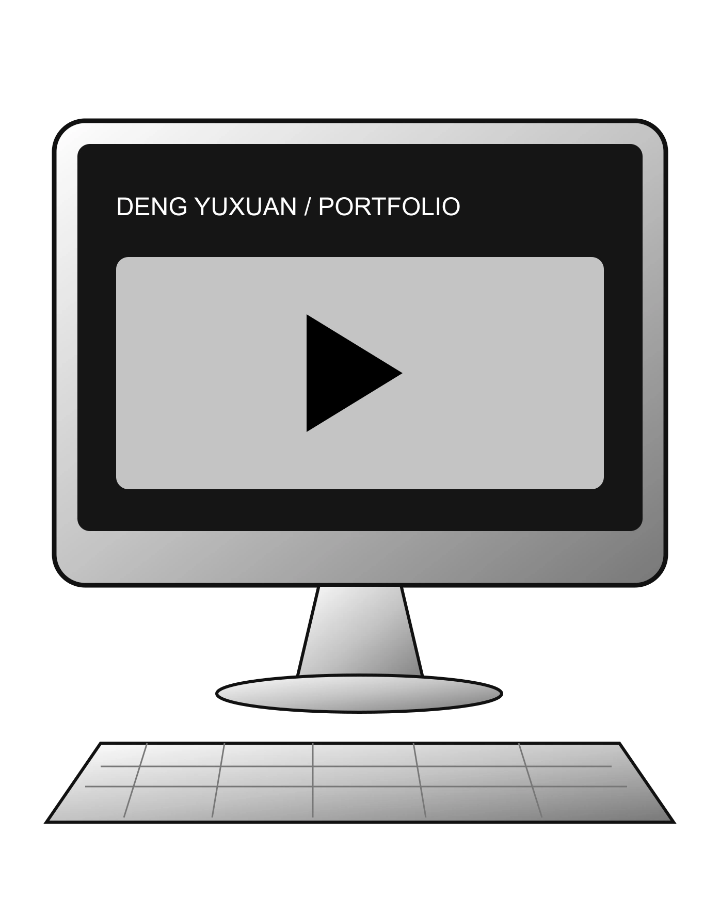

天津云初科技有限公司 AIGC 内容创作师
负责脚本拆解、分镜规划与角色、场景、道具资产制作，结合参考图和多轮生成，统一角色造型、画风与镜头细节。围绕人物五官偏差、服装变化和场景衔接问题迭代提示词与素材，整理可复用资产，支持短剧多镜头连续制作。

把灵感、设计与影像放进电脑。
三个入口，认识我的不同侧面。
拖入三个图标，展开作品集。

把想法写进脚本，
让故事走进画面。
拥有 5 年视频后期与内容创作经验，作品涵盖品牌广告、电商种草、短剧、短片与互动影游。
从剪辑、调色与声音设计出发，逐步转向 AIGC 内容创作，负责剧本拆解、分镜设计及角色与场景资产制作，把创意从脚本推进到成片。
参与 40+ 短剧及广告类项目，创作覆盖短剧、带货视频、TVC 广告与互动影游。
负责脚本拆解、分镜规划与角色、场景、道具资产制作，结合参考图和多轮生成，统一角色造型、画风与镜头细节。围绕人物五官偏差、服装变化和场景衔接问题迭代提示词与素材，整理可复用资产，支持短剧多镜头连续制作。
围绕品牌定位与产品卖点，负责短视频脚本、分镜及后期制作，完成素材筛选、剪辑、字幕、调色与声音编排。通过调整镜头顺序、精简冗余画面与优化信息节奏，兼顾广告卖点表达和故事情绪；参与素材归档、版本管理与成片检查，按制作节点交付。
脚本与分镜 · 角色和场景一致性 · AI 图像与视频生成 · 剪辑、调色与声音设计 · 英文沟通。
图像与设计：Nano Banana / ChatGPT / ComfyUI / Midjourney / 即梦 / Photoshop / Illustrator
视频与后期：可灵 / LibTV / 即梦 / Premiere Pro / 剪映 / Suno
下一件作品，正在发生。